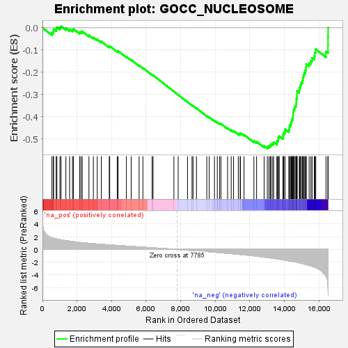
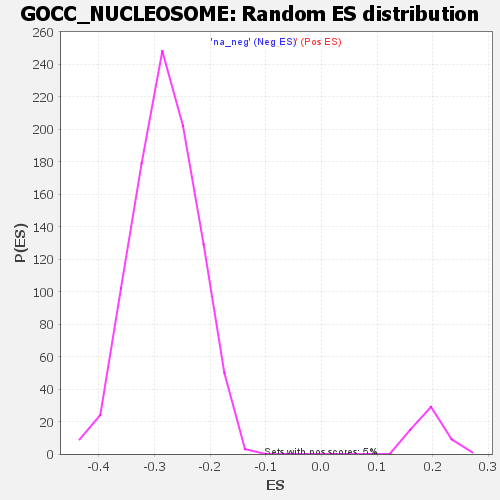

| | | Dataset | all_genes |
| Phenotype | NoPhenotypeAvailable |
| Upregulated in class | na_neg |
| GeneSet | GOCC_NUCLEOSOME |
| Enrichment Score (ES) | -0.54162335 |
| Normalized Enrichment Score (NES) | -1.9261062 |
| Nominal p-value | 0.0 |
| FDR q-value | 0.0109120505 |
| FWER p-Value | 0.328 |
Table: GSEA Results Summary

Fig 1: Enrichment plot: GOCC_NUCLEOSOME
Profile of the Running ES Score & Positions of GeneSet Members on the Rank Ordered List
| SYMBOL | RANK IN GENE LIST | RANK METRIC SCORE | RUNNING ES | CORE ENRICHMENT | | 1 | ING3 | 548 | 1.826 | -0.0221 | No |
| 2 | EPC2 | 629 | 1.762 | -0.0161 | No |
| 3 | HP1BP3 | 644 | 1.756 | -0.0062 | No |
| 4 | MBTD1 | 793 | 1.652 | -0.0050 | No |
| 5 | ACTR6 | 836 | 1.635 | 0.0025 | No |
| 6 | H2BW2 | 1012 | 1.537 | 0.0013 | No |
| 7 | MEAF6 | 1075 | 1.497 | 0.0068 | No |
| 8 | H3-3A | 1355 | 1.380 | -0.0017 | No |
| 9 | CENPA | 1571 | 1.297 | -0.0068 | No |
| 10 | SLF1 | 1738 | 1.238 | -0.0093 | No |
| 11 | KAT6A | 1797 | 1.217 | -0.0054 | No |
| 12 | MORF4L1 | 2151 | 1.098 | -0.0201 | No |
| 13 | BRD8 | 2226 | 1.076 | -0.0180 | No |
| 14 | GLYR1 | 2302 | 1.055 | -0.0160 | No |
| 15 | H2AZ1 | 2690 | 0.960 | -0.0337 | No |
| 16 | VPS72 | 2946 | 0.903 | -0.0436 | No |
| 17 | H2AZ2 | 3171 | 0.852 | -0.0520 | No |
| 18 | KAT5 | 3405 | 0.802 | -0.0613 | No |
| 19 | YEATS4 | 3865 | 0.705 | -0.0849 | No |
| 20 | MACROH2A2 | 3894 | 0.700 | -0.0823 | No |
| 21 | MPHOSPH8 | 4329 | 0.619 | -0.1049 | No |
| 22 | ACTB | 4379 | 0.611 | -0.1041 | No |
| 23 | KAT6B | 4857 | 0.525 | -0.1299 | No |
| 24 | KDM1B | 5135 | 0.482 | -0.1438 | No |
| 25 | SHPRH | 5593 | 0.392 | -0.1692 | No |
| 26 | MORF4L2 | 5812 | 0.353 | -0.1803 | No |
| 27 | RUVBL1 | 6347 | 0.253 | -0.2112 | No |
| 28 | EPC1 | 6402 | 0.244 | -0.2130 | No |
| 29 | MACROH2A1 | 7607 | 0.036 | -0.2861 | No |
| 30 | ACTL6A | 7855 | -0.012 | -0.3010 | No |
| 31 | RUVBL2 | 8394 | -0.112 | -0.3331 | No |
| 32 | ZNHIT1 | 8655 | -0.158 | -0.3480 | No |
| 33 | DMAP1 | 8714 | -0.168 | -0.3505 | No |
| 34 | H2AC18 | 8912 | -0.208 | -0.3612 | No |
| 35 | H3-3B | 9510 | -0.330 | -0.3955 | No |
| 36 | H4C11 | 9651 | -0.364 | -0.4018 | No |
| 37 | TRRAP | 9954 | -0.431 | -0.4175 | No |
| 38 | H4C8 | 10118 | -0.469 | -0.4245 | No |
| 39 | H4C14 | 10252 | -0.501 | -0.4295 | No |
| 40 | H2BC9 | 10328 | -0.517 | -0.4309 | No |
| 41 | H2AX | 10714 | -0.609 | -0.4506 | No |
| 42 | SRCAP | 10922 | -0.659 | -0.4591 | No |
| 43 | H4C1 | 11059 | -0.692 | -0.4632 | No |
| 44 | H2BC21 | 11333 | -0.770 | -0.4750 | No |
| 45 | H4C13 | 11441 | -0.796 | -0.4767 | No |
| 46 | H2AC25 | 11458 | -0.802 | -0.4727 | No |
| 47 | SPHK2 | 11665 | -0.847 | -0.4800 | No |
| 48 | H3C4 | 12237 | -1.014 | -0.5085 | No |
| 49 | MRGBP | 12391 | -1.062 | -0.5113 | No |
| 50 | H2BC12 | 12827 | -1.214 | -0.5303 | No |
| 51 | H4C12 | 13014 | -1.279 | -0.5337 | Yes |
| 52 | H2BC17 | 13107 | -1.313 | -0.5313 | Yes |
| 53 | H3C6 | 13182 | -1.345 | -0.5275 | Yes |
| 54 | H2BC14 | 13229 | -1.363 | -0.5219 | Yes |
| 55 | H2BC3 | 13325 | -1.395 | -0.5191 | Yes |
| 56 | H4C2 | 13377 | -1.412 | -0.5135 | Yes |
| 57 | H2BC13 | 13571 | -1.489 | -0.5161 | Yes |
| 58 | H2BC11 | 13574 | -1.491 | -0.5070 | Yes |
| 59 | H3C12 | 13646 | -1.524 | -0.5020 | Yes |
| 60 | H2AJ | 13647 | -1.525 | -0.4926 | Yes |
| 61 | H1-2 | 13704 | -1.548 | -0.4864 | Yes |
| 62 | H2BC10 | 13921 | -1.634 | -0.4895 | Yes |
| 63 | H2BC5 | 13928 | -1.637 | -0.4798 | Yes |
| 64 | H4C5 | 13957 | -1.648 | -0.4714 | Yes |
| 65 | H3C3 | 14026 | -1.683 | -0.4652 | Yes |
| 66 | EP400 | 14038 | -1.688 | -0.4554 | Yes |
| 67 | H2BC18 | 14259 | -1.793 | -0.4578 | Yes |
| 68 | H4C9 | 14285 | -1.801 | -0.4482 | Yes |
| 69 | H2BC7 | 14296 | -1.805 | -0.4377 | Yes |
| 70 | H3C7 | 14369 | -1.845 | -0.4307 | Yes |
| 71 | H3C1 | 14400 | -1.861 | -0.4211 | Yes |
| 72 | H1-5 | 14434 | -1.875 | -0.4116 | Yes |
| 73 | H2BC26 | 14486 | -1.895 | -0.4030 | Yes |
| 74 | H1-10 | 14497 | -1.904 | -0.3919 | Yes |
| 75 | H2BC4 | 14509 | -1.907 | -0.3808 | Yes |
| 76 | H3C14 | 14517 | -1.912 | -0.3695 | Yes |
| 77 | H2AC8 | 14573 | -1.939 | -0.3609 | Yes |
| 78 | H3-7 | 14620 | -1.970 | -0.3516 | Yes |
| 79 | H2AC7 | 14673 | -1.992 | -0.3425 | Yes |
| 80 | H3C10 | 14689 | -2.001 | -0.3311 | Yes |
| 81 | H3C11 | 14693 | -2.002 | -0.3189 | Yes |
| 82 | H4C16 | 14727 | -2.025 | -0.3085 | Yes |
| 83 | H2AC4 | 14730 | -2.025 | -0.2961 | Yes |
| 84 | H4C4 | 14732 | -2.027 | -0.2837 | Yes |
| 85 | H2AC11 | 14862 | -2.108 | -0.2786 | Yes |
| 86 | H3C2 | 14885 | -2.125 | -0.2668 | Yes |
| 87 | H4C3 | 14934 | -2.159 | -0.2565 | Yes |
| 88 | H2BC6 | 14976 | -2.181 | -0.2455 | Yes |
| 89 | H2AC17 | 15046 | -2.223 | -0.2360 | Yes |
| 90 | H2AC19 | 15071 | -2.247 | -0.2237 | Yes |
| 91 | H2BC15 | 15107 | -2.270 | -0.2118 | Yes |
| 92 | H3C13 | 15151 | -2.304 | -0.2002 | Yes |
| 93 | H2AC12 | 15216 | -2.355 | -0.1896 | Yes |
| 94 | H2AC20 | 15254 | -2.386 | -0.1772 | Yes |
| 95 | H2AC15 | 15264 | -2.392 | -0.1630 | Yes |
| 96 | H2BC8 | 15434 | -2.515 | -0.1578 | Yes |
| 97 | H2AC16 | 15535 | -2.604 | -0.1479 | Yes |
| 98 | H2AC13 | 15604 | -2.656 | -0.1357 | Yes |
| 99 | H2AC6 | 15731 | -2.781 | -0.1262 | Yes |
| 100 | H1-4 | 15765 | -2.814 | -0.1109 | Yes |
| 101 | H1-3 | 15816 | -2.869 | -0.0963 | Yes |
| 102 | H1-0 | 16406 | -4.223 | -0.1061 | Yes |
| 103 | H2AC21 | 16523 | -5.817 | -0.0774 | Yes |
| 104 | H3C8 | 16526 | -6.120 | -0.0398 | Yes |
| 105 | TGM2 | 16530 | -6.528 | 0.0002 | Yes |
Table: GSEA details [plain text format]

Fig 2: GOCC_NUCLEOSOME: Random ES distribution
Gene set null distribution of ES for GOCC_NUCLEOSOME